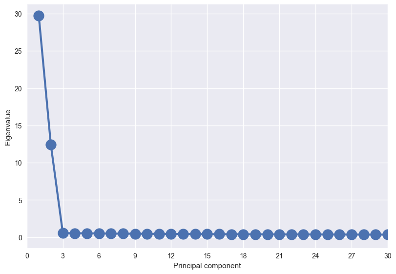
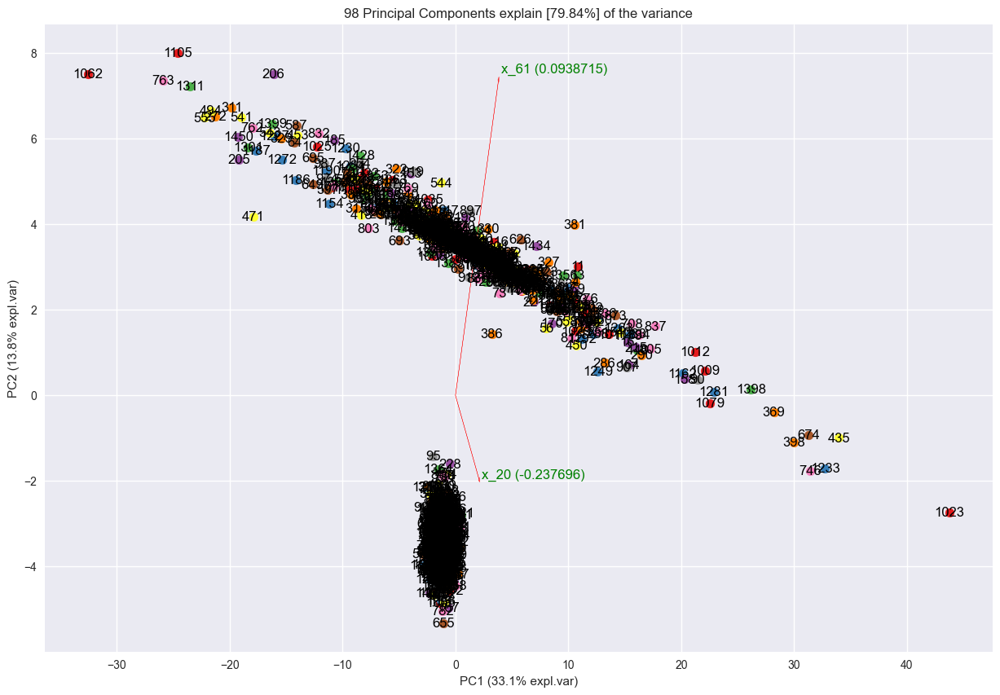
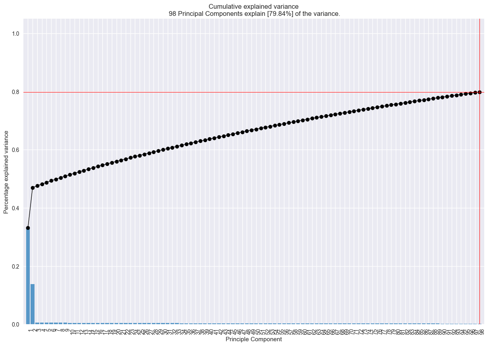

In this problem, you will use the OnlineAd training data set attached in the assignment (OnlineAd X train.csv and OnlineAd Y train.csv). The feature matrix OnlineAd X train.csv contains 1452 observations, where each row represents a different user with 251 features that summarize the user characteristics and previous browsing history. These 251 features have been anonymized and normalized. Hence, each feature’s interpretation is hidden for analysis. (i.e., you don’t have to worry about the meaning of each feature.) There are two online advertisements, A and B, with which this experiment was performed. In each observation, a user clicks either A or B, or she may not click anything. She cannot click on two ads at the same time. This click response is recorded in OnlineAd Y train.csv, where each row contains information on which ad was clicked (or whether a user clicked nothing). A no click response is recorded as 1 in the first column in OnlineAd Y train.csv, a click on A is 1 in the second column, and likewise for a click on B is 1 in the third column. Note that 0 means non-chosen options by the user. Hence, each row sum of OnlineAd Y train.csv is exactly 1. Each row of OnlineAd Y train.csv is the click response for the corresponding user in the corresponding row of OnlineAd X train.csv
Loading Dataset
Code
# Set Work Directoryprint("Before Directory: %s"%os.getcwd())os.chdir("E:/OneDrive - SNU/r")print("After Directory: %s"%os.getcwd())
Before Directory: e:\OneDrive - SNU\(B) 대학원\수업\2022 2학기\데이터사이언스를위한머신러닝과딥러닝\과제2
After Directory: E:\OneDrive - SNU\r
Code
# Read Datasety_train=pd.read_csv("OnlineAd_Y_train.csv",header=None)x_train=pd.read_csv("OnlineAd_X_train.csv",header=None)x_test=pd.read_csv("OnlineAd_X_test.csv",header=None)# Check if there is missing valueprint("Total missing variable: ",x_test.isnull().sum().sum()) # no missing valueprint("Total missing variable: ",x_train.isnull().sum().sum()) # no missing valueprint("Total missing variable: ",y_train.isnull().sum().sum()) # no missing value# Dimensionprint("xdim: ", x_train.shape)print("ydim: ", y_train.shape)print("xtestdim: ", x_test.shape)
Total missing variable: 0
Total missing variable: 0
Total missing variable: 0
xdim: (1452, 251)
ydim: (1452, 3)
xtestdim: (300, 251)
Code
x_colname=[]for i in np.arange(0,251): x_colname.append(f"x_{i}")x_train.columns=x_colnamey_colname=["No","A","B"]y_train.columns=y_colname# no click response: No, second columnn: A, third column: B# make array for the x_trainx_train2=x_train.to_numpy()display(x_train2[:10])# make array for the y_trainy_train2=np.array(np.where(y_train["No"] ==1, 0, np.where(y_train["A"] ==1, 1, 2)))display(y_train2[:10])
[40 pts] Using OnlineAd X train.csv and OnlineAd Y train.csv, train multiple models that you learned in class. You may try a model which is modified from the models we covered in the first half of the course. You are allowed to use the existing packages, but make sure to clearly explain what models are used. Report the training results. What metric did you use? How do different models perform on the training data?
# multinomial logistic regressionmodel_mlogit_l = LogisticRegression(multi_class='multinomial', solver='lbfgs',max_iter=1000)model_mlogit_s = LogisticRegression(multi_class='multinomial', solver='saga',max_iter=1000)# ‘sag’ and ‘saga’ fast convergence is only guaranteed on features with approximately the same scale. (already scaled)# evaluate the model and collect the scoresaccuracy_mlogit_s = cross_val_score(model_mlogit_l, x_train2, y_train2, scoring='accuracy', cv=cv_5, n_jobs=-1)f1w_mlogit_s = cross_val_score(model_mlogit_l, x_train2, y_train2, scoring='f1_weighted', cv=cv_5, n_jobs=-1)accuracy_mlogit_l = cross_val_score(model_mlogit_s, x_train2, y_train2, scoring='accuracy', cv=cv_5, n_jobs=-1)f1w_mlogit_l= cross_val_score(model_mlogit_l, x_train2, y_train2, scoring='f1_weighted', cv=cv_5, n_jobs=-1)# report the model performanceprint('Mean Accuracy_saga: %.3f (%.3f)'% (np.mean(accuracy_mlogit_s), np.std(accuracy_mlogit_s)))print('Mean f1 weighted saga: %.3f (%.3f)'% (np.mean(f1w_mlogit_s), np.std(f1w_mlogit_s)))print('Mean Accuracy_lbfgs: %.3f (%.3f)'% (np.mean(accuracy_mlogit_l), np.std(accuracy_mlogit_l)))print('Mean f1 weighted_lbfgs: %.3f (%.3f)'% (np.mean(f1w_mlogit_l), np.std(f1w_mlogit_l)))
Mean Accuracy_saga: 0.548 (0.023)
Mean f1 weighted saga: 0.542 (0.022)
Mean Accuracy_lbfgs: 0.549 (0.024)
Mean f1 weighted_lbfgs: 0.542 (0.022)
Code
model_mlogit_l.fit(x_train2, y_train2)y_pred_mlogit = model_mlogit_l.predict(x_train2)print("Training result (f1_weighted): ", round(f1_score(y_train2, y_pred_mlogit, average='weighted'),2))print("Training result (accuracy): ", round(accuracy_score(y_train2, y_pred_mlogit),2))
Training result (f1_weighted): 0.72
Training result (accuracy): 0.73
In a Jupyter environment, please rerun this cell to show the HTML representation or trust the notebook. On GitHub, the HTML representation is unable to render, please try loading this page with nbviewer.org.
model_svm_linear = SVC(kernel='linear',C=0.01,random_state=2022)# evaluate the model and collect the scoresaccuracy_svm_linear = cross_val_score(model_svm_linear, x_train2, y_train2, scoring='accuracy', cv=cv_5, n_jobs=-1)f1w_svm_linear = cross_val_score(model_svm_linear, x_train2, y_train2, scoring='f1_weighted', cv=cv_5, n_jobs=-1)# report the model performanceprint('Mean f1_weighted: %.3f (%.3f)'% (np.mean(f1w_svm_linear), np.std(f1w_svm_linear)))print('Mean Accuracy: %.3f (%.3f)'% (np.mean(accuracy_svm_linear), np.std(accuracy_svm_linear)))
Mean f1_weighted: 0.562 (0.021)
Mean Accuracy: 0.645 (0.018)
Code
# training resultmodel_svm_linear.fit(x_train2, y_train2)y_pred_svml = model_svm_linear.predict(x_train2)print("Training result (f1_weighted): ", round(f1_score(y_train2, y_pred_svml, average='weighted'),2))print("Training result (accuracy): ", round(accuracy_score(y_train2, y_pred_svml),2))
Training result (f1_weighted): 0.57
Training result (accuracy): 0.66
Code
# SVM: rbfmodel_svm_r_g = SVC(kernel='rbf',random_state=2022)parameters= {'C': [ 0.1, 1, 10,100, 500,1000], 'gamma': [0.00001, 0.00005, 0.0001, 0.0025, 0.0005, 0.001, 0.01] }# run grid searchmodel_svm_r = GridSearchCV(model_svm_r_g, param_grid = parameters, cv = cv_5, n_jobs=-1,scoring='f1_weighted')start = time()model_svm_r.fit(x_train2, y_train2)print("GridSearchCV took %.2f seconds for %d candidate parameter settings."% (time() - start, len(model_svm_r.cv_results_["params"])))report(model_svm_r.cv_results_)# Find Best Parameter C and gamma
GridSearchCV took 34.72 seconds for 42 candidate parameter settings.
Model with rank: 1
Mean validation score: 0.579 (std: 0.024)
Parameters: {'C': 10, 'gamma': 0.01}
Model with rank: 2
Mean validation score: 0.574 (std: 0.022)
Parameters: {'C': 1, 'gamma': 0.01}
Model with rank: 3
Mean validation score: 0.562 (std: 0.021)
Parameters: {'C': 500, 'gamma': 1e-05}
Fitting 25 folds for each of 18 candidates, totalling 450 fits
GridSearchCV took 3.53 seconds for 18 candidate parameter settings.
Model with rank: 1
Mean validation score: 0.617 (std: 0.022)
Parameters: {'shrinkage': 0.5, 'solver': 'lsqr'}
Model with rank: 1
Mean validation score: 0.617 (std: 0.022)
Parameters: {'shrinkage': 0.5, 'solver': 'eigen'}
Model with rank: 3
Mean validation score: 0.616 (std: 0.024)
Parameters: {'shrinkage': 0.6, 'solver': 'lsqr'}
Model with rank: 3
Mean validation score: 0.616 (std: 0.024)
Parameters: {'shrinkage': 0.6, 'solver': 'eigen'}
Code
model_lda = LinearDiscriminantAnalysis(shrinkage=0.5,solver='lsqr')# evaluate the model and collect the scoresaccuracy_lda = cross_val_score(model_lda, x_train2, y_train2, scoring='accuracy', cv=cv_5, n_jobs=-1)f1w_lda = cross_val_score(model_lda, x_train2, y_train2, scoring='f1_weighted', cv=cv_5, n_jobs=-1)# report the model performanceprint('Mean f1_weighted lda: %.3f (%.3f)'% (np.mean(f1w_lda), np.std(f1w_lda)))print('Mean Accuracy lda: %.3f (%.3f)'% (np.mean(accuracy_lda), np.std(accuracy_lda)))
Mean f1_weighted lda: 0.617 (0.022)
Mean Accuracy lda: 0.621 (0.024)
Code
# training resultmodel_lda.fit(x_train2, y_train2)y_pred_lda = model_lda.predict(x_train2)print("Training result (f1_weighted): ", round(f1_score(y_train2, y_pred_lda, average='weighted'),2))print("Training result (accuracy): ", round(accuracy_score(y_train2, y_pred_lda),2))
Training result (f1_weighted): 0.65
Training result (accuracy): 0.65
9) quadratic discriminant analysis
Code
from sklearn.discriminant_analysis import QuadraticDiscriminantAnalysis
Code
model_qda_g = QuadraticDiscriminantAnalysis()parameters= {'reg_param': np.arange(0,1,0.1).tolist()}# run grid searchmodel_qda = GridSearchCV(model_qda_g, verbose=1, param_grid=parameters, cv=cv_5, n_jobs=-1, scoring='f1_weighted')start = time()model_qda.fit(x_train2, y_train2)print("GridSearchCV took %.2f seconds for %d candidate parameter settings."% (time() - start, len(model_qda.cv_results_["params"])))report(model_qda.cv_results_)
Code
model_qda = QuadraticDiscriminantAnalysis(reg_param=0.9)# evaluate the model and collect the scoresaccuracy_qda = cross_val_score(model_qda_f, x_train2, y_train2, scoring='accuracy', cv=cv_5, n_jobs=-1)f1w_qda = cross_val_score(model_qda_f, x_train2, y_train2, scoring='f1_weighted', cv=cv_5, n_jobs=-1)# report the model performanceprint('Mean f1_weighted qda: %.3f (%.3f)'% (np.mean(f1w_qda), np.std(f1w_qda)))print('Mean Accuracy qda: %.3f (%.3f)'% (np.mean(accuracy_qda), np.std(accuracy_qda)))
Mean f1_weighted qda: 0.543 (0.025)
Mean Accuracy qda: 0.525 (0.027)
Code
# training resultmodel_qda.fit(x_train2, y_train2)y_pred_qda = model_qda.predict(x_train2)print("Training result (f1_weighted): ", round(f1_score(y_train2, y_pred_qda, average='weighted'),2))print("Training result (accuracy): ", round(accuracy_score(y_train2, y_pred_qda),2))
Training result (f1_weighted): 0.62
Training result (accuracy): 0.62
c:\Users\jsw06\miniconda3\envs\koreait\lib\site-packages\sklearn\discriminant_analysis.py:887: UserWarning: Variables are collinear
warnings.warn("Variables are collinear")
(b)
[20 pts] Do you think dimension reduction on features (or feature selection) is needed here? If so, provide analysis on which features may be important. If not, please justify your answer.
Dimension reduction on features or feature selection might provide better accuracy score, since models training with a subset of features (such as gradient boosting classifier, random forest etc.) showed better mean CV f1_weighted score (or accuracy score) compared to other models without feature selection. There might be a possibility of model specification issue on including non-informative or redundant predictors. Therefore, using dimension reduction on features or feature selection to improve prediction might be desirable.
pca_table = pd.DataFrame({'Eigenvalue':model_pca.explained_variance_, 'Proportion':model_pca.explained_variance_ratio_}, index=np.array([f"pca{num+1}"for num inrange(x_train2.shape[1])]))pca_table['Cumulative'] = pca_table['Proportion'].cumsum()display(pca_table.head(10))
Eigenvalue
Proportion
Cumulative
pca1
29.741754
0.331111
0.331111
pca2
12.455516
0.138666
0.469776
pca3
0.546720
0.006087
0.475863
pca4
0.535468
0.005961
0.481824
pca5
0.522446
0.005816
0.487640
pca6
0.507087
0.005645
0.493286
pca7
0.484598
0.005395
0.498681
pca8
0.473509
0.005272
0.503952
pca9
0.466847
0.005197
0.509150
pca10
0.446134
0.004967
0.514116
Code
from psynlig import pca_screeplt.clf()plt.style.use('seaborn')pca_scree(model_pca, marker='o', markersize=16, lw=3)plt.rcParams.update({'font.size': 16})plt.xlim([0, 30])plt.show()
<Figure size 800x550 with 0 Axes>

According to screeplot there is not much difference on eigenvalue after 3, therefore the number of components were set to three.
Code
from pca import pcaplt.clf()model_pca = pca(n_components=3)pca_reduced_array = model_pca.fit_transform(x_train)pca_df = pd.DataFrame(pca_reduced_array, index=x_train.index,columns=np.array([f"pca{num+1}"for num inrange(2)]))result_pca = model_pca.fit_transform(x_train)fig, ax = model_pca.biplot3d(n_feat=3, legend=False)plt.show()
[pca] >Processing dataframe..
[pca] >The PCA reduction is performed on the [251] columns of the input dataframe.
[pca] >Fit using PCA.
[pca] >Compute loadings and PCs.
[pca] >Compute explained variance.
[pca] >Outlier detection using Hotelling T2 test with alpha=[0.05] and n_components=[3]
[pca] >Outlier detection using SPE/DmodX with n_std=[2]
[pca] >Cleaning previous fitted model results..
[pca] >Processing dataframe..
[pca] >The PCA reduction is performed on the [251] columns of the input dataframe.
[pca] >Fit using PCA.
[pca] >Compute loadings and PCs.
[pca] >Compute explained variance.
[pca] >Outlier detection using Hotelling T2 test with alpha=[0.05] and n_components=[3]
[pca] >Outlier detection using SPE/DmodX with n_std=[2]
[pca] >Plot PC1 vs PC2 vs PC3 with loadings.
[colourmap]> Warning: Colormap [Set1] can not create [1452] unique colors! Available unique colors: [9].
[colourmap]> Warning: Colormap [Set1] can not create [1452] unique colors! Available unique colors: [9].
[pca] >Set parameter "label=None" to ignore the labels and significanly speed up the scatter plot.
[pca] >Processing dataframe..
[pca] >The PCA reduction is performed to capture [80.0%] explained variance using the [251] columns of the input data.
[pca] >Fit using PCA.
[pca] >Compute loadings and PCs.
[pca] >Compute explained variance.
[pca] >Number of components is [98] that covers the [80.00%] explained variance.
[pca] >The PCA reduction is performed on the [251] columns of the input dataframe.
[pca] >Fit using PCA.
[pca] >Compute loadings and PCs.
[pca] >Outlier detection using Hotelling T2 test with alpha=[0.05] and n_components=[98]
[pca] >Outlier detection using SPE/DmodX with n_std=[2]
[pca] >Cleaning previous fitted model results..
[pca] >Processing dataframe..
[pca] >The PCA reduction is performed on the [251] columns of the input dataframe.
[pca] >Fit using PCA.
[pca] >Compute loadings and PCs.
[pca] >Compute explained variance.
[pca] >Outlier detection using Hotelling T2 test with alpha=[0.05] and n_components=[98]
[pca] >Outlier detection using SPE/DmodX with n_std=[2]
[pca] >Plot PC1 vs PC2 with loadings.
[colourmap]> Warning: Colormap [Set1] can not create [1452] unique colors! Available unique colors: [9].
[colourmap]> Warning: Colormap [Set1] can not create [1452] unique colors! Available unique colors: [9].
[pca] >Set parameter "label=None" to ignore the labels and significanly speed up the scatter plot.
<Figure size 800x550 with 0 Axes>

<Figure size 800x600 with 0 Axes>
Code
plt.clf()plt.show(model_pca.plot())
<Figure size 800x550 with 0 Axes>

<Figure size 800x550 with 0 Axes>
However, 3 components can not be used since the variance explained by 3 components is only 48% of the total variance. If the variance explained by the components needs to be over 80%, then at least 98 components need to be used. This discrepancy between significant eigenvalues and very small variance explained by marginal components makes it difficult to use PCA in the analysis. Therefore, the PCA was not used in this analysis as a demension reduction technique.
first, l1-regularized linear SVM and logistic regression was used to select features. In order to minimize the possibility of model overfit, cross-validation was adopted to choose best lambdas for l1-regularization.
Using selected features, the crossvalidation accuracy and f1_scores for the models without feature selection was calculated again (logistic, linear svm, quadratic svm, knn, random forest, gbm, xgboost, lda, qda )
In a Jupyter environment, please rerun this cell to show the HTML representation or trust the notebook. On GitHub, the HTML representation is unable to render, please try loading this page with nbviewer.org.
Fitting 25 folds for each of 18 candidates, totalling 450 fits
GridSearchCV took 0.53 seconds for 18 candidate parameter settings.
Model with rank: 1
Mean validation score: 0.625 (std: 0.022)
Parameters: {'shrinkage': 0.5, 'solver': 'lsqr'}
Model with rank: 1
Mean validation score: 0.625 (std: 0.022)
Parameters: {'shrinkage': 0.5, 'solver': 'eigen'}
Model with rank: 3
Mean validation score: 0.624 (std: 0.020)
Parameters: {'shrinkage': 0.4, 'solver': 'lsqr'}
Model with rank: 3
Mean validation score: 0.624 (std: 0.020)
Parameters: {'shrinkage': 0.4, 'solver': 'eigen'}
Code
model_lda_f = LinearDiscriminantAnalysis(shrinkage=0.5,solver='lsqr')# evaluate the model and collect the scoresaccuracy_lda_f = cross_val_score(model_lda_f, x_train5, y_train2, scoring='accuracy', cv=cv_5, n_jobs=-1)f1w_lda_f = cross_val_score(model_lda_f, x_train5, y_train2, scoring='f1_weighted', cv=cv_5, n_jobs=-1)# report the model performanceprint('Mean f1_weighted lda: %.3f (%.3f)'% (np.mean(f1w_lda_f), np.std(f1w_lda_f)))print('Mean Accuracy lda: %.3f (%.3f)'% (np.mean(accuracy_lda_f), np.std(accuracy_lda_f)))
Mean f1_weighted lda: 0.625 (0.022)
Mean Accuracy lda: 0.633 (0.023)
- quadratic discriminant analysis
Code
from sklearn.discriminant_analysis import QuadraticDiscriminantAnalysis
Code
model_qda_g = QuadraticDiscriminantAnalysis()parameters= {'reg_param': np.arange(0,1,0.1).tolist()}# run grid searchmodel_qda = GridSearchCV(model_qda_g, verbose=1, param_grid=parameters, cv=cv_5, n_jobs=-1, scoring='f1_weighted')start = time()model_qda.fit(x_train5, y_train2)print("GridSearchCV took %.2f seconds for %d candidate parameter settings."% (time() - start, len(model_qda.cv_results_["params"])))report(model_qda.cv_results_)
Fitting 25 folds for each of 10 candidates, totalling 250 fits
GridSearchCV took 0.25 seconds for 10 candidate parameter settings.
Model with rank: 1
Mean validation score: 0.626 (std: 0.022)
Parameters: {'reg_param': 0.9}
Model with rank: 2
Mean validation score: 0.626 (std: 0.022)
Parameters: {'reg_param': 0.8}
Model with rank: 3
Mean validation score: 0.624 (std: 0.025)
Parameters: {'reg_param': 0.7000000000000001}
Code
model_qda_f = QuadraticDiscriminantAnalysis(reg_param=0.8)# evaluate the model and collect the scoresaccuracy_qda_f = cross_val_score(model_qda_f, x_train5, y_train2, scoring='accuracy', cv=cv_5, n_jobs=-1)f1w_qda_f = cross_val_score(model_qda_f, x_train5, y_train2, scoring='f1_weighted', cv=cv_5, n_jobs=-1)# report the model performanceprint('Mean f1_weighted qda: %.3f (%.3f)'% (np.mean(f1w_qda_f), np.std(f1w_qda_f)))print('Mean Accuracy qda: %.3f (%.3f)'% (np.mean(accuracy_qda_f), np.std(accuracy_qda_f)))
Mean f1_weighted qda: 0.626 (0.022)
Mean Accuracy qda: 0.627 (0.023)
2.
Based on your training results in Problem 1, you now pick your best model that would generalize well to unseen data. Using your best model, we are going to predict on the provided test dataset, OnlineAd X test.csv which contains 300 observations with 251 features. Here we do not have the corresponding responses for these test observations.
(a)
[20 pts] Report the estimated test performance for your best model. Provide a reason for your choice of a model among the models you considered.
[20 pts] Predict on the provided test dataset, OnlineAd_X_test.csv, and save those predictions as a CSV file named [your-student-ID] pred.csv. The CSV file should only contain the array of dimension [300, 3] in the same format as the OnlineAd_Y_train.csv except the number of rows, since there are only 300 observations in the test data, i.e., the first column corresponds to no click, the second column corresponds to the ad A, and the third column corresponds to the ad B. A violation of this format guideline will result in 10 point penalty.
from scipy.stats import chi2_contingencychi, p, dof, expected = chi2_contingency(prediction_comp.to_numpy())print(f"chi-squared: {chi}",f"p-value (0.05): {p}",f"degree of freedom: {dof}",f"expectation: \n{pd.DataFrame(expected)}")# It cannot be rejected that real clicks and the classifications are from different distributions (only if the tested data is randomly selected from the same distribution of training data)